Postbiotica
Dalla natura il futuro della salute: per Postbiotica ho progettato il sito, i visual 3D della linea PostbiotiX e le infografiche che rendono semplice una scienza nuova.
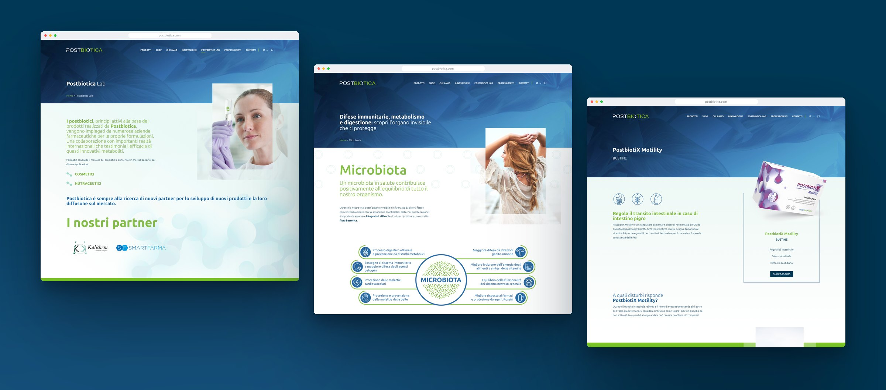
01 — Il sito
Un sito che prima spiega e poi propone: il blu profondo delle foglie, il verde della natura e molto bianco per la scienza.
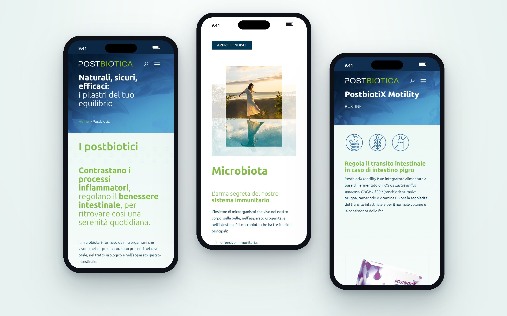
02 — I visual 3D
Cinque confezioni, cinque colori: i render raccontano la linea PostbiotiX prima ancora di leggere l’etichetta.
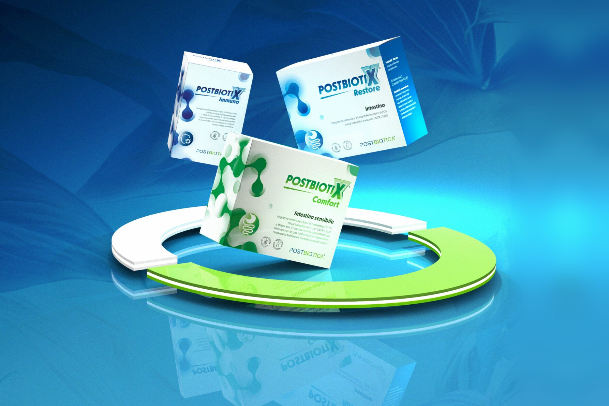
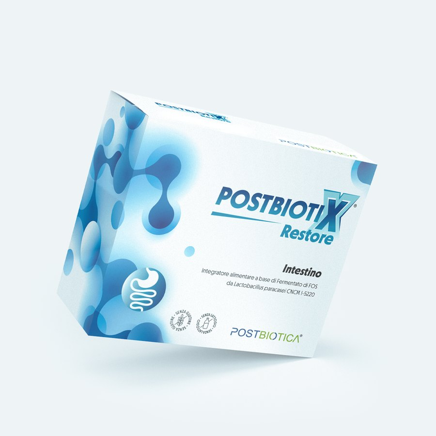
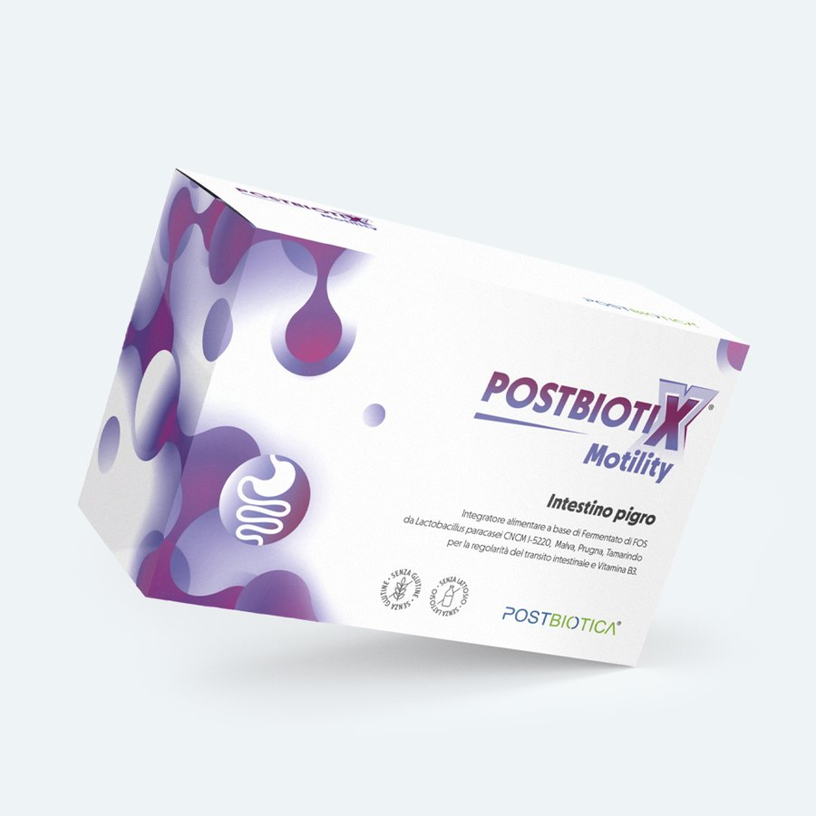
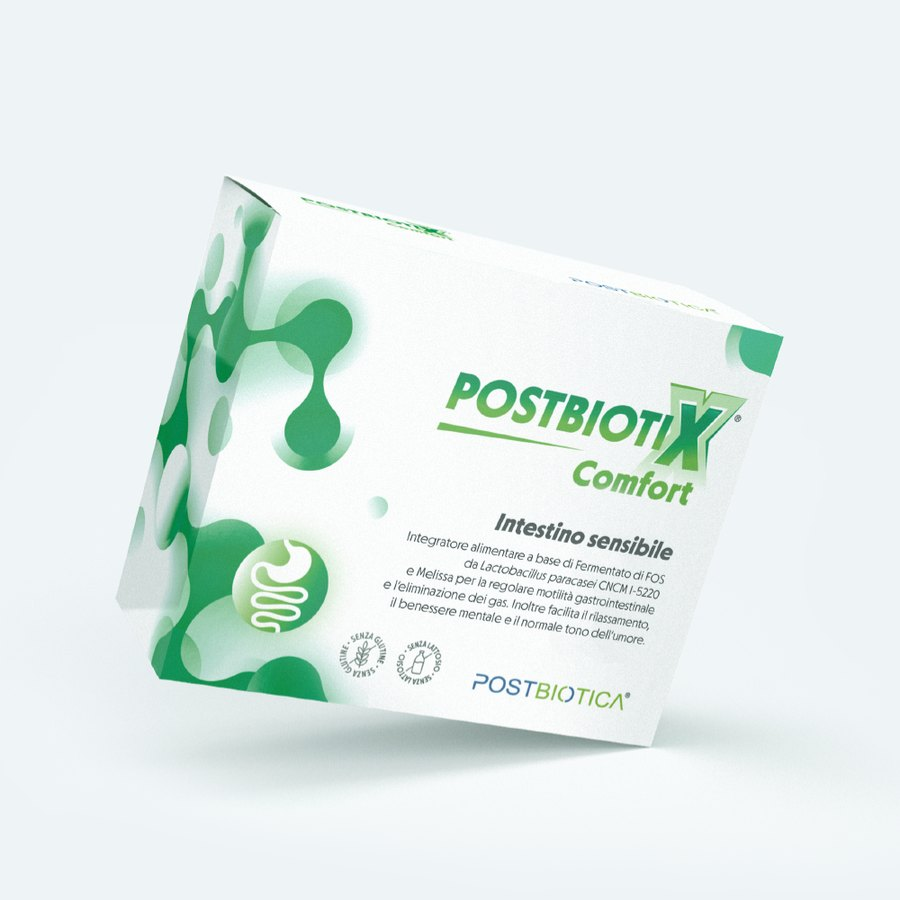
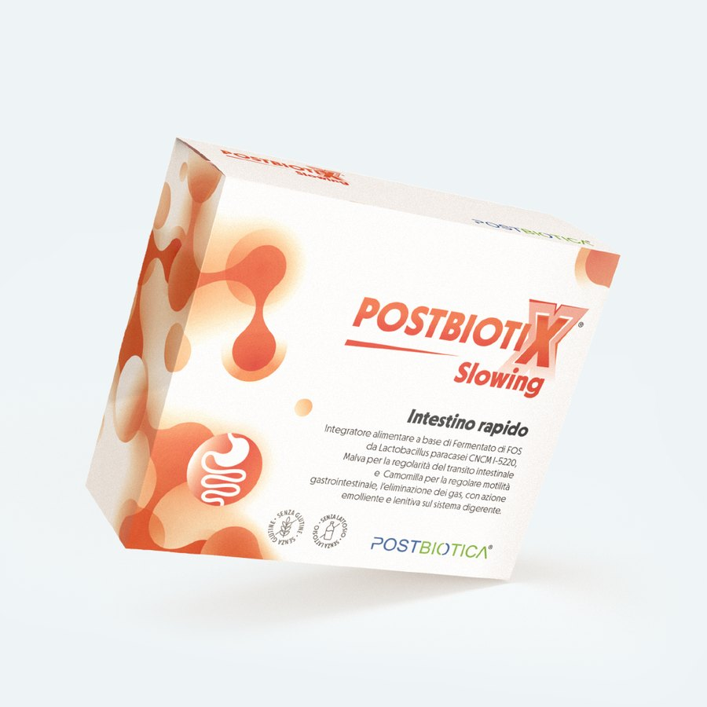
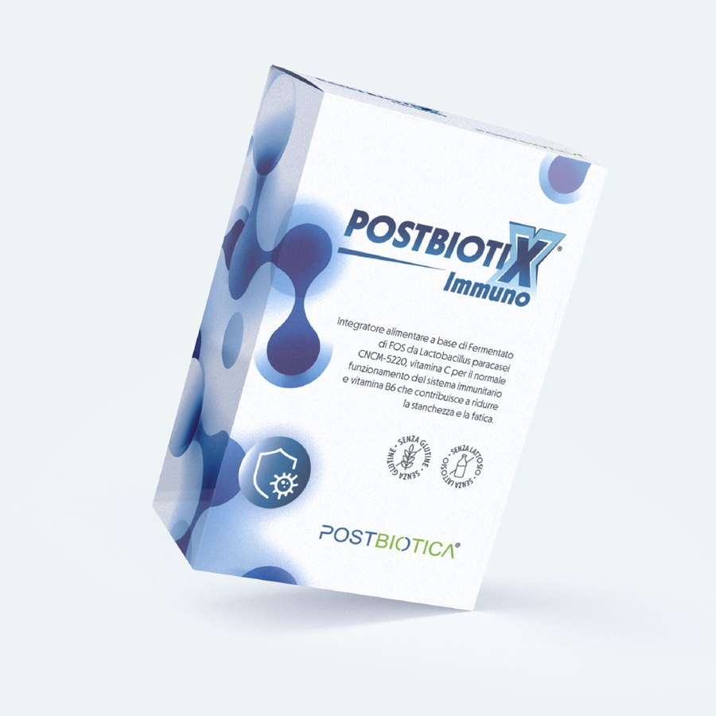
03 — Le infografiche
Una scienza nuova in quattro schemi: da dove nascono i postbiotici, a cosa serve il microbiota, i benefici, come si assumono.
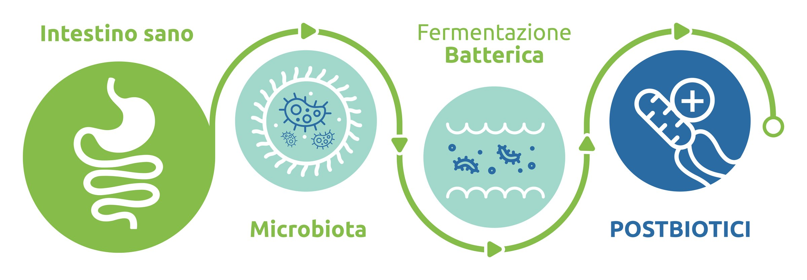
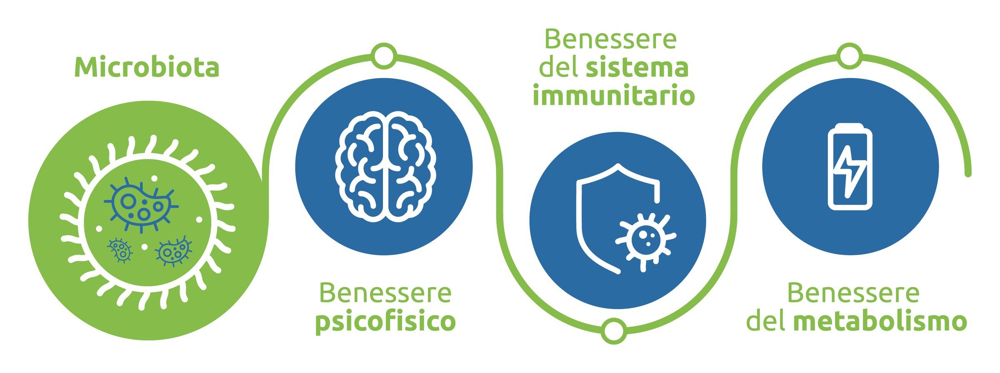
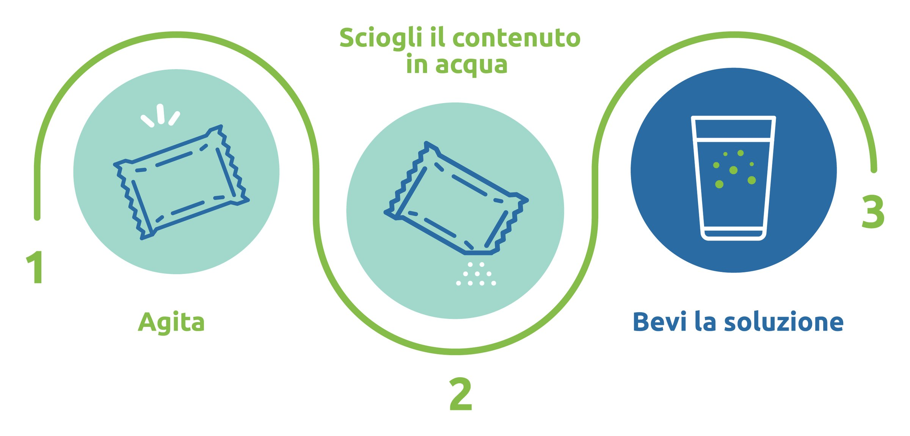
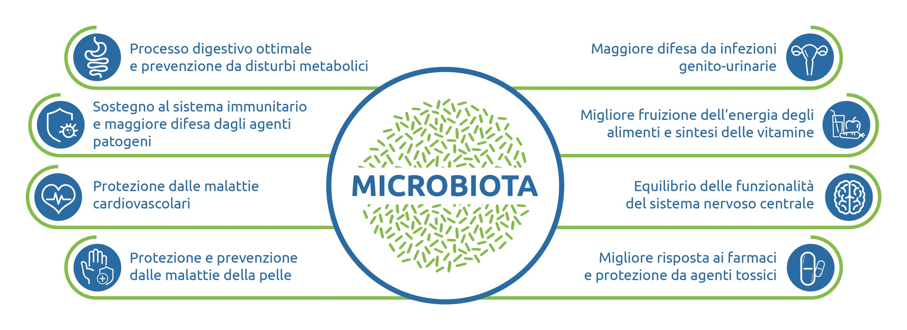
04 — Il sistema
Due colori per il marchio, un colore e un pattern a bolle per ogni prodotto, due caratteri leggibili a ogni misura.
Il sistema in una tavola
A Colori del marchio
Blu notte#003754
Verde#85BC4A
Blu#2B6BA4
Menta#A1D8CB
Bianco#FFFFFF
B Una linea, cinque pattern
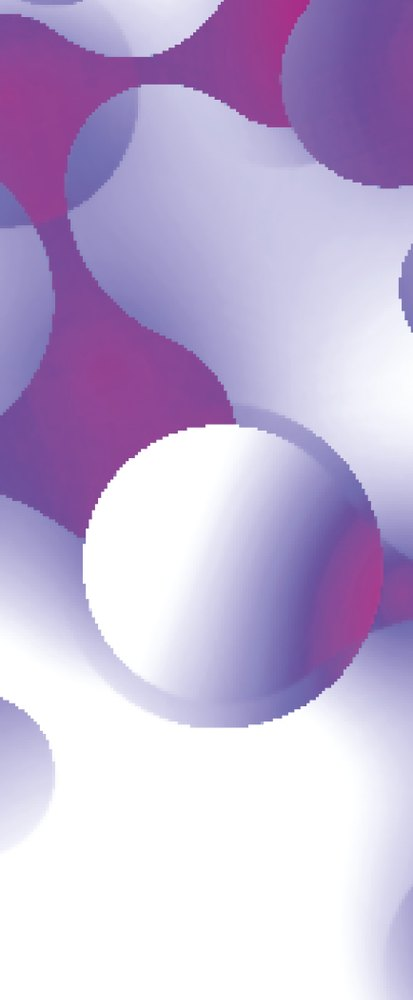
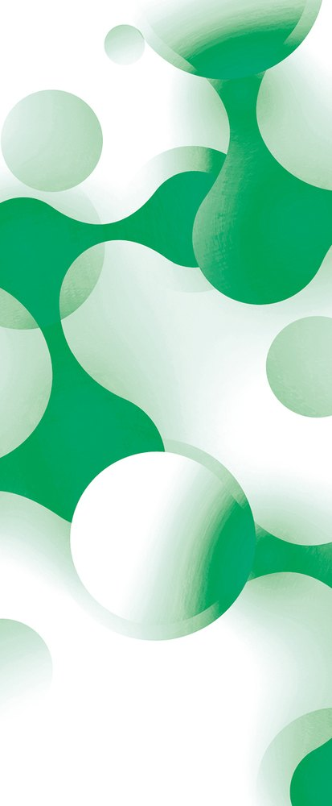
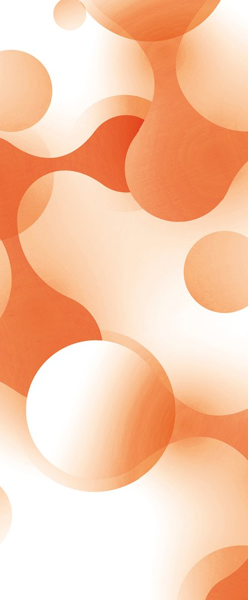
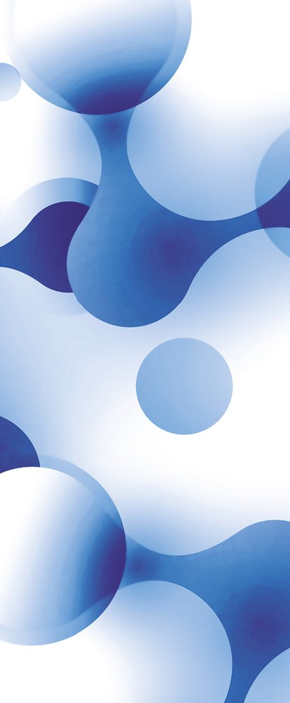
C Caratteri
Aa
Ubuntu
Titoli e richiami · ABCDEFGHIJKLMNOPQRSTUVWXYZ abcdefghijklmnopqrstuvwxyz 0123456789
Aa
Open Sans
Testi lunghi · ABCDEFGHIJKLMNOPQRSTUVWXYZ abcdefghijklmnopqrstuvwxyz 0123456789